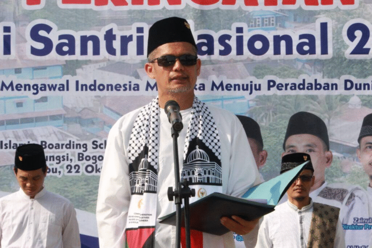
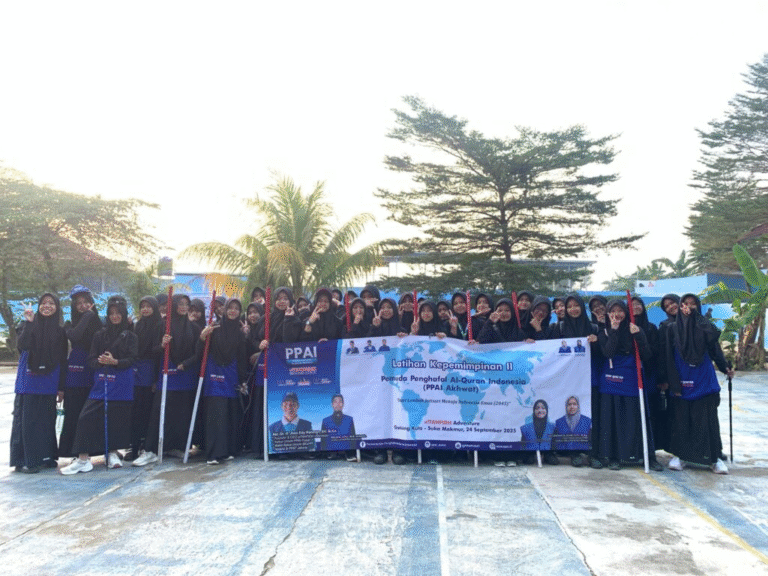
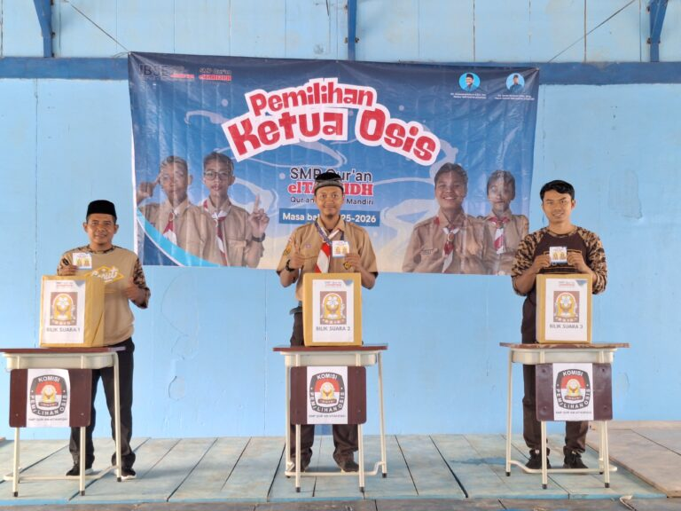
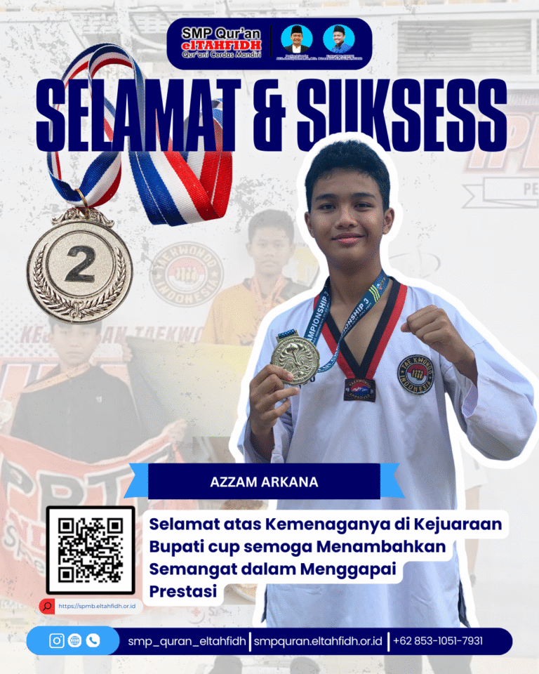
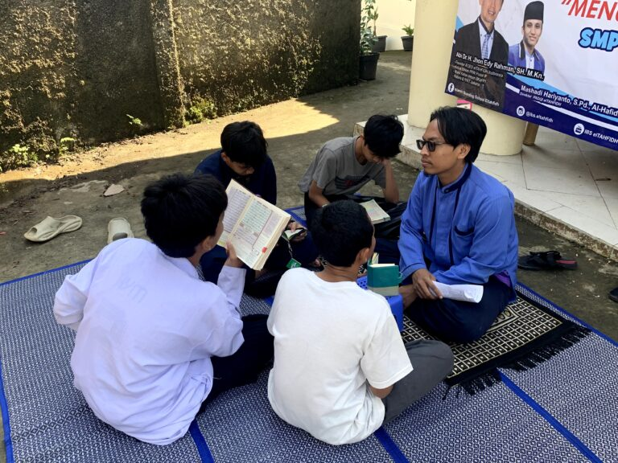

SMP Qur'an Ikhwan Boarding
Asrama putra di kompleks Islamic Boarding School elTAHFIDH, Cileungsi.
Pilihan Kampus
Asrama putra di kompleks Islamic Boarding School elTAHFIDH, Cileungsi.

Asrama putri di bawah Pesantren Qur'an Akhwat elTAHFIDH.

Tanpa asrama, melalui Islamic Full Day School elTAHFIDH.
SelengkapnyaVisi & Misi
Mencetak para penghafal Al-Qur'an, yang berakhlak Al-Qur'an, yang berilmu pengetahuan dan teknologi, cerdas dan mandiri.
Program
Al-Qur'an, akademik, dan pembentukan karakter berjalan bersama.
Pimpinan
Sesuai struktur organisasi resmi elTAHFIDH Indonesia.
SMPQ elTAHFIDH
Direktur

Pesantren Qur'an Akhwat
Direktur
Berita

Bogor, 22 Oktober 2025 — Dalam suasana penuh khidmat, elTAHFIDH Indonesia menggelar Upacara Hari Santri Nasional 2025 di Lapangan Olahraga

Bogor, 24 September 2025 – Pemuda Penghafal Al-Qur’an Indonesia (PPAI) kembali mencatat sejarah penting dalam perjalanan kaderisasi pemuda Qur’ani.…
Mahkota Cahaya dan Syafaat Abadi: Keuntungan Tak Terhingga Orang Tua Hafidz Qur’anMemiliki anak yang berpredikat Hafidz Qur’an (penghafal Al-Qur’an)…

SMP Qur’an elTAHFIDH Gelar Debat dan Pemilihan Ketua OSIS 2025/2026 CILEUNGSI – Pesta Demokrasi Santri: Semangat demokrasi dan kepemimpinan menggelora

Dua atlet muda dari Persatuan Taekwondo elTAHFIDH Indonesia (PPTEI) berhasil mengukir prestasi membanggakan dengan meraih juara 2 di kelas prestasi

BOGOR – Komitmen tinggi Islamic Boarding School elTAHFIDH dalam mencetak generasi penghafal Al-Qur’an kembali diwujudkan melalui Program Akselerasi…
Daftarkan Ananda di SMP Qur'an elTAHFIDH atau tanyakan informasi penerimaan murid baru melalui WhatsApp.